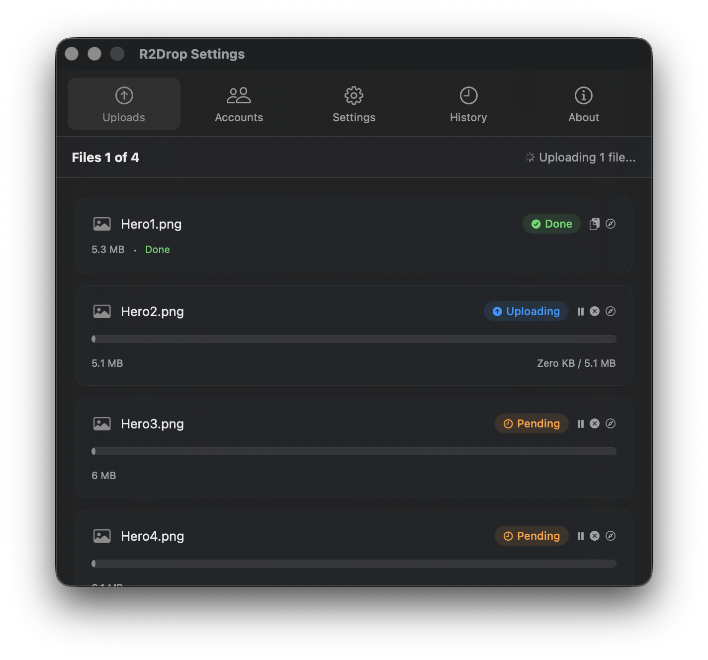

R2Drop ships with a companion command-line tool called r2drop that brings the same fast, reliable Cloudflare R2 upload experience to the terminal. Whether you're writing a deployment script, automating asset uploads in CI/CD, or just prefer the command line, r2drop gives you a single command to upload files to any R2 bucket from macOS, Linux, or Windows.
What is the R2Drop CLI?
The R2Drop CLI (r2drop) is a standalone binary built on the same Rust upload engine as the macOS app. It shares the same configuration file (~/.r2drop/config.toml), so any accounts you've already configured in the R2Drop macOS app are immediately available from the terminal — no duplicate setup required.
Key features of the R2Drop CLI include:
- Multipart, parallel uploads for large files
- Resumable uploads that survive connection drops
- JSON output mode for scripting and automation
- Cross-platform: macOS, Linux, and Windows
- Reads the same
~/.r2drop/config.tomlas the macOS app - Supports multiple named accounts with a
--accountflag

Installing the R2Drop CLI
Via Homebrew (macOS & Linux)
The easiest way to install r2drop on macOS or Linux is via Homebrew:
brew tap superhumancorp/tap
brew install --formula superhumancorp/tap/r2dropVia the install script
You can also install directly using the install script:
curl -sf https://r2drop.com/install.sh | shThis script detects your platform and architecture, downloads the correct binary, and places it in /usr/local/bin.
Manual download
Pre-built binaries for macOS (arm64, x86_64), Linux (arm64, x86_64), and Windows (x86_64) are available on the GitHub Releases page.
Basic Usage
The core command for uploading a file to Cloudflare R2 is:
r2drop upload <file>For example, to upload a file called screenshot.png:
r2drop upload screenshot.pngThis uploads the file using your default account and prints the public URL to stdout on completion.
Upload a folder
To upload an entire folder recursively:
r2drop upload ./dist --recursiveSpecify a destination path
To upload a file to a specific path within your bucket:
r2drop upload report.pdf --key reports/2026/q1-report.pdfFlags and Options
The R2Drop CLI supports the following flags:
--account <name>— Use a named account from config.toml instead of the default--key <path>— Override the destination key (path) in the bucket--recursive— Upload a directory recursively--json— Output results as JSON (for scripting)--public— Set public-read ACL on the uploaded object--dry-run— Validate and show what would be uploaded without uploading--concurrency <n>— Set number of parallel upload parts (default: 4)
JSON Output for Automation
One of the most useful features for scripting is the --json flag, which makes r2drop output structured JSON instead of human-readable text:
r2drop upload build/app.tar.gz --jsonOutput:
{
"status": "success",
"key": "app.tar.gz",
"url": "https://cdn.example.com/app.tar.gz",
"bucket": "my-bucket",
"size": 14532096,
"duration_ms": 2341
}This makes it straightforward to parse the upload URL in shell scripts using tools like jq:
URL=$(r2drop upload build/app.tar.gz --json | jq -r '.url')
echo "Deployed to: $URL"Using Multiple Accounts
If you have multiple Cloudflare R2 accounts configured in ~/.r2drop/config.toml, use the --account flag to specify which one to use:
r2drop upload assets/ --account work-bucket --recursive
r2drop upload backup.tar.gz --account personal-r2Learn more about setting up multiple accounts in our guide: Managing Multiple Cloudflare R2 Accounts with R2Drop.
Using R2Drop CLI in CI/CD
The R2Drop CLI is designed for headless use, making it ideal for CI/CD pipelines. Here's an example GitHub Actions workflow that uploads build artifacts to Cloudflare R2:
name: Deploy to R2
on:
push:
branches: [main]
jobs:
deploy:
runs-on: ubuntu-latest
steps:
- uses: actions/checkout@v4
- name: Build
run: npm run build
- name: Install r2drop
run: curl -sf https://r2drop.com/install.sh | sh
- name: Configure R2Drop
run: |
mkdir -p ~/.r2drop
cat > ~/.r2drop/config.toml <<EOF
[accounts.production]
bucket = "${{ secrets.R2_BUCKET }}"
endpoint = "${{ secrets.R2_ENDPOINT }}"
access_key_id = "${{ secrets.R2_ACCESS_KEY_ID }}"
secret_access_key = "${{ secrets.R2_SECRET_ACCESS_KEY }}"
EOF
- name: Upload to R2
run: |
r2drop upload ./dist --recursive --account production --jsonThis workflow installs r2drop on the CI runner, writes a minimal config.toml from GitHub Actions secrets, and uploads the dist folder to Cloudflare R2.
Configuration File Format
The R2Drop CLI reads its configuration from ~/.r2drop/config.toml. Here's an example with two accounts:
[accounts.personal]
bucket = "my-personal-bucket"
endpoint = "https://abc123.r2.cloudflarestorage.com"
access_key_id = "..."
secret_access_key = "..."
custom_domain = "https://cdn.example.com"
[accounts.work]
bucket = "work-assets"
endpoint = "https://def456.r2.cloudflarestorage.com"
access_key_id = "..."
secret_access_key = "..."
[defaults]
account = "personal"Note: On macOS, when using the R2Drop desktop app, credentials are stored in the Keychain rather than in config.toml. The CLI reads them from the same Keychain entry when running on the same Mac.